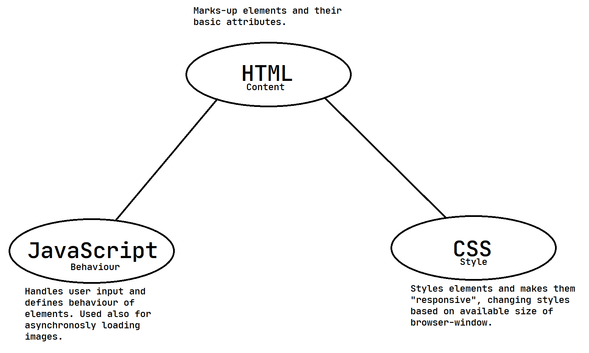

The Bleicher Experience
Your personal fundamentals-course.
In this lesson you learn all basic things to keep in mind when creating web related software. These are many of the most used modern concepts, so remember them good, you will need them a lot.
Language Concept
CSS-Grid
CSS-Grid is a relatively new technology for CSS. It is a very powerful tool, as you will find out shortly.
You can use grid to create predictable behaviour when dealing with 2d arangements, though it also can be used to create 1d arrangements.
- To enable grid just do
display: grid -
And set
grid-template-columnandgrid-template-rowThese specify the size of each colomn and row. The unit to use is generaly
fr.A
frrepresents one fraction.So if you have
grid-template-column: 1fr 1fr 3fr;1fr is 1/5th of the width, 3fr is 3/5ths of the whole width.
Transition
To use transitions do the following:
-
Add
transition: all ease-in-out 1s;to element where transition should happen.